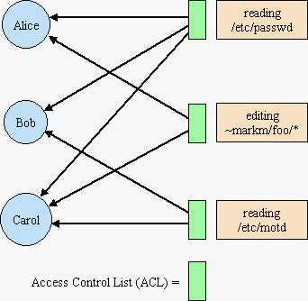

| |
Capability
Myths |
||||||
Despite the virtues of capability systems, the vast bulk of scientific and engineering effort has gone into ACL-based security development. Capability systems have been largely dismissed by computer security reseachers and practitioners due to a history of misunderstandings repeated till they became common wisdom. These myths about what capability systems cannot do continue to spread, even though many of the actual systems in use could do these supposedly impossible things. The myths about capabilities we will discuss here are:
- The Equivalence Myth: ACLs and capability systems are formally equivalent
- The Irrevocability Myth: Capabilities cannot revoke access
- The Delegation Myth: Capabilities get away from you
| 1. ACLs as Columns | 2. Caps as Rows | 3. Caps as Keys (SPKI) |
4. Caps in Practice | |
|---|---|---|---|---|
| A. Granularity of Subject |
Human
|
instance
|
instance
(Human) |
instance
|
| B. Designation and Authority |
separate
|
separate
|
(mostly)
separate |
bundled
|
| C. Static vs Dynamic |
static
|
static
|
dynamic
|
dynamic
|
| D. 1-level vs Compositional |
1-level
|
1-level
|
1-level
|
compositional
|
| E. Accessing and Authorizing |
separate
|
separate
|
separate
|
bundled
|
| F. Is the Alice-Bob link required? |
no
|
no
|
no
|
yes
|
Models vs Reality: Column #1 represents the dominant security paradigm, ACLs, both in practice, and approximately as commonly understood. Column #4 represents actual capability systems in practice. Columns #2 and #3 represent the two different ways in which capabilities are commonly understood -- according to a naive static view of Lampson's access matrix [Lampson71], and according to the metaphor that "capabilities are keys". One capability-like system, SPKI [Ellison99], is mostly faithful to the "capabilities are keys" metaphor, so its properties, when different, are listed in parentheses in column #3. The row are some attributes on which security models may differ. As we see, capabilities as commonly understood have more in common with actual ACL systems than actual capability systems. Below, we proceed from left to right across the columns, and from top to bottom across the rows.
|
reading
/etc/passwd |
editing
~markm/foo/* |
reading
/etc/motd |
|
|---|---|---|---|
|
Alice
|
Y
|
Y
|
N
|
|
Bob
|
Y
|
N
|
Y
|
|
Carol
|
Y
|
Y
|
Y
|
The Lampson Access Matrix
1. ACLs as Columns of the Access Matrix
The ACL diagram on the right is logically equivalent to the normal access matrix visualization of ACLs, but makes clearer what's going on, and sets the stage for the steps we take below.
The circles on the left are subjects, and the boxes on the right are resources (or permissions to resources). (The security literature often calls these "objects", but this exposition uses "object" instead for an encapsulated combination of state and behavior, as is familiar from object-oriented programming.)
The black arrows show which subjects may access which resource. In the access matrix visualization, each resource is a column heading, and each subject is a row heading. In the access matrix, each black arrow becomes a Y at the intersection of that subject-row and that resource-column.
In an ACL system, there is a list, the access control list, associated with each resource, listing which subjects may access it, shown as a green box in our ACL diagram. This list corresponds to a column of cells in the access matrix. When a subject attempts to access a resource, the system first checks to ensure that the subject is listed in the ACL for that resource.
2. Capabilities as Rows of the Static Access Matrix
The Equivalence Myth: ACLs and capability systems are formally equivalent
 Capability
systems generally have per-subject capability lists, listing the resources
the subject may access, shown as green boxes on CList diagram on the right.
The CLists are rows on the access matrix. The thin black arrows emerging
from the CLists (the Ys on those rows) are the capabilities themselves.
Capability
systems generally have per-subject capability lists, listing the resources
the subject may access, shown as green boxes on CList diagram on the right.
The CLists are rows on the access matrix. The thin black arrows emerging
from the CLists (the Ys on those rows) are the capabilities themselves.
Although [Lampson71]'s presentation of the access matrix was more sophisticated, the lasting legacy of this paper -- what most everyone remembers and teaches to one generation after another -- is the access matrix itself as a static representation of access rights, and its implications of equivalence. (For genuine flaws of the Lampson paper itself, see [Close02].) It would seem that ACLs and capability systems both represent the same information, and differ only in whether to record this information in a by-column or a by-row data structure. If this were indeed the only difference, there would be no non-performance relevance to the choice between the two models. Since this was widely believed, many people did, as a result, lose interest.
There are three things wrong with this picture.
A. Granularity of Subject, and POLA
What's a "subject"? In using the access matrix to model ACL systems, an implicit assumption is made that "subject" corresponds to "user", "account", or "principal", ie, is understood to have human granularity. When modeling capability systems, a "subject" corresponds to an instance of some sort of module, whether an object (an instance of a class, as in a capability language) or a process (an instance of an executable program, as in a capability OS). A instance is assumed to have much finer granularity than a user, and indeed, much finer granularity than users are normally even aware of. This difference cannot be reconciled without doing violence to one of these models [Shapiro00].
The appeal of the ACL model rests on the image of an administrator being able to list subjects whose identity a resource's administrator can know and reason about, ie, accounts, or other relatively static human-granularity distinctions. The primary virtue of the capability model is the Principle of Least Authority, or POLA (introduced by [Saltzer75] as the Principle of Least Privilege). This relies on a user being able to invoke an instance, and grant it only that subset of authority it needs to carry out its proper duties. This relies on each instance having its own separate set of authorities.
B. Designation and Authority: The Confused Deputy part 1
The matrix visualization shows each authorization as a Y in a cell of the matrix. By simply shifting to the above visualization with the black arrows, we see a difference obscured by the matrix visualization -- the direction in which the arrows point. Why should this make a difference?
The ACL model presumes some namespace, such as filenames, which subjects use to designate which resources they are attempting to access. This namespace is necessarily separate from the representation of authorization, since the arrows representing authorization point in the wrong direction. This assumes away one of the deepest problems in computer security -- the designation problem. How does a subject come to know a designator and understand what relationship the designated resource supposedly has to the subject, and what actions the subject should therefore perform on the resource? When designators and authorizations take separate path through a system, their recombination invariably leads to Confused Deputies [Hardy88, Sitaker00] -- where an authorization given to it by one party is used to access a resource designated by a different party, bringing about an unintended rights transfer. In ACL systems, this confusion is essentially inescapable.
In a capability system, the capability itself already points from the subject to the resource, and so serves both to designate what resource to access, as well as providing the authority to perform that access. We can avoid introducing a shared namespace into the foundations, and thereby avoid all the security issues involved in managing a shared namespace -- issues rarely acknowledged as a cost of non-capability models.
C. Static vs Dynamic
A security model must account for how authorization changes over time [Harrison76]. This takes us to our next column.
3. Capabilities as Tickets/Keys (and SPKI)
The most appealing metaphor for initially teaching capabilities is capabilities are (copyable) keys (or similarly, copyable tickets). This metaphor is often used, and we ourselves have used it to good effect [Stiegler00]. However, many people are not taught to graduate from this metaphor, and so are left to take it too literally, leading them into the next two myths.
In the diagram of SPKI on the right, the ability to read /etc/motd is behind a locked door. To read it, you have to access "/etc/motd" for reading and present the key that unlocks the door -- demonstrating that you are authorized to read. The diagram shows that Alice already posseses one of these keys, represented by the black arrow from Alice to the resource. (Alice's CList is now shown simply as the arrow-tail-dots within Alice.) The stubby yellow arrow represents Alice giving to Bob a copy of this key. Once Bob receives it, he will now be able to read /etc/motd as well. By giving Bob a copy of her key, Alice is authorizing Bob to read /etc/motd. The stubby yellow arrow represents this act of authorization. (In SPKI, an authorization certificate.)
In this model and in SPKI, subjects authorize subjects (unlabeled stubby yellow arrow carrying a black arrow) and subjects access resources (the gray arrow carrying the operation name, "read"), and these are two distinct kinds of action. This is not true of actual capability systems, as we'll explain below.
As with actual capabilities, keys are correctly assumed unforgeable. The only way Bob can get a key to a resource is either by being its creator, or if someone who already has the key, such as Alice, decides to give him a copy. Subjects are also correctly assumed to be encapsulated -- if Alice doesn't want to hand out a copy, no one can steal it from her CList.
The Irrevocability Myth: Capabilities cannot revoke access
Likewise, no one but Alice can delete a key from Alice's CList -- not even the resource's creator. This correctly implies that keys themselves are literally irrevocable. Further, by assumption, the key is all that's required to establish that an access is authorized -- there is correctly no provision within the model to place an extra security check between Alice and the resource. So, in the absence of the ability to revoke Alice's key, there would seem to be no opportunity to revoke Alice's access. Can privileges only be granted in an irrevocable fashion? In many quarters, this is still the common wisdom.
Capability systems modeled as unforgeable references present the other extreme, where delegation is trivial, and revocation is infeasible.
As we will see shortly, this conclusion is often reached because this model is non-compositional. SPKI, also non-compositional, had to introduce a revocation primitive because revocation could not otherwise be provided within the model. (This is not to say that [Chander01] is confused for this reason. We gather that they are confused for more complex reasons.)
The Delegation Myth: Capabilities get away from you
According to this metaphor, once Alice has the key to /etc/motd, she can give a copy to anyone, such as Bob, without restriction. Though SPKI is the only capability-like system we know that actually allows such unrestricted authorization, many have assumed it.
In 1984, Earl Boebert published "On the Inability of an Unmodified Capability System to Enforce the *-Property" [Boebert84]. This paper also claimed that capability systems could not do confinement. Though Boebert was soon convinced otherwise by Norm Hardy, he never published a retraction. His supposed impossibility proof had tremendous influence, especially by way of [Kain87] and [Gong89]:
Boebert made clear in [Boebert84] that an unmodified or classic capability system can not enforce the * property or solve the confinement problem. The main pitfall of a classic capability system is that the right to exercise access carries with it the right to grant access . Since a capability is just a bit string, it can propagate in many ways without the detection of the kernel or the server.
[Gong89]
In [Gong89], Li Gong then goes on to propose a mixed capability / ACL system, ICAP, to address this "deficiency". Once Boebert's mistake is understood, it's easy to see that ICAP is pointless. [Gong89] won the best of conference award, and the similar [Kain87] shared the symposium best paper award, both after KeyKOS's patent [Hardy86] on capability-based confinement has issued, and after well after the KeyKOS architecture had been explained in the computer security literature [Hardy85].
Note that the last sentence quoted above is a separate but contributory misunderstanding -- the equivalence of capabilities and bit strings is a feature only of a specialized category of capability systems known as password capability systems, such as [Tanenbaum86]. (These can be described as capabilities as unguessable phone numbers systems.) For password capability systems, Boerbert's results may often be valid. But most capability systems are the other kind -- partitioned capability systems.
The resulting common wisdom was further amplified by the influential and widely cited [Wallach97], which also reiterates the revocation myth:
However, an important issue is confinement of privileges [26]. It should not generally be possible for one program to delegate a privilege to another program (that right should also be mediated by the system). This is the fundamental flaw in an unmodified capability system; two programs which can communicate object references can share their capabilities without system mediation. This means that any code which is granted a capability must be trusted to care for it properly. In a mobile code system, the number of such trusted programs is unbounded. Thus, it may be impossible to ever trust a simple capability system. Likewise, mechanisms must be in place to revoke a capability after it is granted. Many extensions to capabilities have been proposed to address these concerns. Kain and Landwehr [Kain87] propose a taxonomy for extensions and survey many systems which implement them.
Fundamentally, extended capability systems must either place restrictions on how capabilities can be used, or must place restrictions on how capabilities can be shared. Some systems, such as ICAP [15], make capabilities aware of ``who'' called them; they can know who they belong to and become useless to anyone else. The IBM System/38 [4] associates optional access control lists with its capabilities, accomplishing the same purpose. Other systems use hardware mechanisms to block the sharing of capabilities [24].
Further correspondence with Wallach speaks for itself.
I'll concede that, if you extend your capability system in such a way to allow the kind of interposition we're talking about (i.e., not something supported by a traditional capability system), that you can potentially get the semantics that you want, assuming your type system allows you do this cleanly (Java's type system makes this very messy).
Wallach, quoted in [Shapiro01]
Ignoring Java's type system, this interposition issue can be reduced to the question of whether the system is compositional. With the exception of SPKI, all actual capability systems we know of are compositional.
4. Actual Capability Systems in Practice
The properties of most actual capability systems are depicted in the Granovetter diagram on the right [Granovetter73, Miller00]. The differences with the previous diagram explain the remaining rows of our Myths vs Reality table, and put to rest the above two capabilities as keys myths.
D. One-Level vs Compositional.
The pink /etc/motd box has been replaced by the blue Carol circle. This depicts that there is no artificial separation between subjects and resources. Rather, every subject is a resource, and every resource is conceptually a subject (though some, like the number 3, are primitively provided). This uniformity makes the capability security model compositional -- these networks can be composed to any depth. As this corresponds to object-oriented programming practice, we now refer to Alice, Bob, and Carol as objects.
E. Accessing and Authorizing: The Confused Deputy part 2
The thick yellow arrow now represents an invocation (or message). It carries both the message-name foo and an arrow tail, showing that Alice is both accessing Bob and authorizing Bob in one act. When Bob receives a capability (a designation/authority bundle) to Carol, Bob must receive this as part of a package that gives it meaning to Bob -- as an argument of an invocation. Otherwise, how's Bob to know why someone gave him this extra authority, or what he's supposed to do with it? (In SPKI, the certificate is often delivered together with other information that could inform Bob, but SPKI doesn't bind these two together securely.)
A capability bundles together designation and authority. The act of invoking bundles together the acts of accessing and of authorizing. Both are required to avoid Confused Deputy problems [Hardy88, Sitaker00].
F. Is the Alice-Bob link required?
The thick yellow arrow is now riding on a capability from Alice to Bob. In actual capability systems, in order for Alice to authorize Bob to access Carol, Alice must herself also be authorized to access both Bob and Carol. The Alice-Bob link is required since invocations may only travel on capabilities. To understand this using the key metaphor is a stretch. (Everyone is normally locked in their house. In order for Alice to give Bob a copy of the key to Carol's house, Alice needs a key to Bob's house, so that she may get to Bob to give him the key. We will not belabor this further.)
This new restriction makes confinement possible -- to prevent Alice from delegating to Bob, don't give Alice access to Bob. Because capabilities are compositional, so is confinement -- a subgraph of cooperating objects cannot delegate to Bob if Bob is not reachable from that subgraph. This is the simple insight behind the capability-based confinement systems of [Hardy86, Shapiro99, Wagner02, and Yee02], and should put to rest The Delegation Myth.
Revoking Access
To put to rest The Irrevocability Myth, we show capability revocation by composition (or interposition). Let's say Alice wants to give Bob revocable access to Carol, with Alice having the option to revoke it at a later time. Alice could simply create a pair of forwarders, c1 and c2, connected as shown. Alice would give Bob access to c1, and retain c2 for herself. Of the c1/c2 pair, we may call c1 the forwarding facet, and c2 the revoking facet. Bob may use c1 as if it were Carol -- any messages sent to c1 get forwarded through c2 to Carol. This works well given that inter-object interactions are mediated mainly by messages, and that messages may be handled generically, so that a reusable mechanism can forward any message.
When Alice desires to revoke Bob's access to Carol, she invokes c2, telling it to stop forwarding. c2 would then drop its pointer to Carol, and c1 would become useless to Bob. Note that no capabilities were revoked, which is the truth supporting the myth. Bob still has access to c1. However, access to the useless c1 is no better than a hypothetical revoked capability would be. We haven't revoked the capability, but we have revoked the effective access to Carol represented by that capability. Revocation is just a change in behavior of user-defined objects.
How does this interact with The Delegation Myth? What if Bob had delegated to Fred his access to Carol? Since Bob only ever has access to c1, not Carol herself, this is the most Bob can delegate to Fred (and only, of course, if Bob has access to Fred). When Alice invokes c2 in order to disable c1, this prevents further access to Carol by Fred just as much as it prevents access by Bob.
The Powerbox pattern of XXX above makes extensive use of such patterns of revocation.
XXX Need concluding paragraph
Acknowledgements
Thanks to Tyler Close, Hal Finney, Marc Stiegler, E. Dean Tribble, Zooko, and especially to Jonathan Shapiro for their comments, not all of which are reflected in the current draft.
References
[Boebert84] W. E. Boebert, "On the Inability of an Unmodified Capability System to Enforce the *-Property", in Proceedings of the 7th DoD/NBS Computer Security Conference, 1984.
[Chander01] Ajay Chander, Drew Dean, John Mitchell, "A State Transition Model of Trust Management and Access Control", 14th IEEE Computer Security Foundations Workshop, Online at citeseer.
[Close02] Tyler Close, "Re: Capability Myths Demolished", e-lang email commenting on this paper, archived at http://www.eros-os.org/pipermail/e-lang/2002-November/007833.html.
[Ellison99] Carl Ellison, Bill Frantz, Butler Lampson, Ron Rivest, B. Thomas, and T. Ylonen, "SPKI Certificate Theory" IETF RFC 2693. Online at http://www.ietf.org/rfc/rfc2693.txt.
[Gong89] Li Gong, "A Secure Identity-Based Capability System", IEEE Symposium on Security and Privacy, 1989. Online at citeseer
[Granovetter73] Mark Granovetter, "The Strength of Weak Ties", in: American Journal of Sociology (1973) Vol. 78, pp.1360-1380.
[Hardy85] Norm Hardy, "The KeyKOS Architecture", Operating Systems Review, September 1985, pp. 8-25. Updated at http://www.cis.upenn.edu/~KeyKOS/OSRpaper.html.
[Hardy86] Norm Hardy, "U.S. Patent 4,584,639: Computer Security System", Key Logic, 1986 (The "Factory" patent), Online at http://www.cap-lore.com/CapTheory/KK/Patent.html.
[Hardy88] Norm Hardy, "The Confused Deputy, or why capabilities might have been invented", Operating Systems Review, pp. 36:38, Oct., 1988, http://cap-lore.com/CapTheory/ConfusedDeputy.html.
[Harrison76] Michael Harrison, Walter Ruzzo, Jeffrey Ullman., "Protection in Operating Systems", Comm. of ACM, Vol. 19, n 8, August 1976, pp.461-471. Online at http://www.cs.fiu.edu/~nemo/cot6930/hru.pdf.
[Kain87] Richard Y. Kain, Carl Landwehr, "On Access Checking in Capability-Based Systems", in IEEE Transactions on Software Engineering SE-13, 2 (Feb. 1987), 202-207. Reprinted from the Proceedings of the 1986 IEEE Symposium on Security and Privacy, April, 1986, Oakland, CA; Online at http://chacs.nrl.navy.mil/publications/CHACS/Before1990/1987landwehr-tse.pdf.
[Lampson71] Butler Lampson, "Protection", in Proceedings of the Fifth Annual Princeton Conference on Informations Sciences and Systems, pages 437-443, Princeton University, 1971. Reprinted in Operating Systems Review, 8(l), January 1974. Online at http://research.microsoft.com/~lampson/09-protection/WebPage.html.
[Miller00] Mark S. Miller, Chip Morningstar, Bill Frantz, "Capability-based Financial Instruments", in Proceedings of Financial Cryptography 2000, Springer Verlag, 2000. Online at http://www.erights.org/elib/capability/ode/index.html.
[Saltzer75] Jerome H. Saltzer, Michael D. Schroeder, "The Protection of Information in Computer Systems", Proceedings of the IEEE. Vol. 63, No. 9 (September 1975), pp. 1278- 1308. Online at http://cap-lore.com/CapTheory/ProtInf/.
[Shapiro99] Jonathan S. Shapiro, "EROS: A Capability System", Ph.D. thesis, University of Pennsylvania, 1999. Online at http://www.eros-os.org/papers/shap-thesis.ps.
[Shapiro00] Jonathan Shapiro, "Comparing ACLs and Capabilities", 2000, Online at http://www.eros-os.com/essays/ACLSvCaps.html.
[Shapiro01] Jonathan Shapiro, "Re: Old Security Myths Continue to Mislead", email archived at http://www.eros-os.org/pipermail/e-lang/2001-August/005532.html.
[Sitaker00] Kragen Sitaker, "thoughts on capability security on the Web", email archived at http://lists.canonical.org/pipermail/kragen-tol/2000-August/000619.html.
[Stiegler00] Marc Stiegler, "E in a Walnut", Online at http://www.skyhunter.com/marcs/ewalnut.html.
[Tanenbaum86] Andrew S. Tanenbaum, Sape J. Mullender, Robbert van Renesse, "Using Sparse Capabilities in a Distributed Operating System" (1986) Proc. Sixth Int'l Conf. On Distributed Computing Systems, IEEE, pp. 558-563. Online at ftp://ftp.cs.vu.nl/pub/papers/amoeba/dcs86.ps.Z.
[Wagner02] David Wagner & Dean Tribble, "A Security Analysis of the Combex DarpaBrowser Architecure", Online at http://www.combex.com/papers/darpa-review/.
[Wallach97] Dan Wallach, Dirk Balfanz, Drew Dean, Edward Felten, "Extensible Security Architectures for Java", in Proceedings of the 16th Symposium on Operating Systems Principles (Saint-Malo, France), October 1997. Online at http://www.cs.princeton.edu/sip/pub/sosp97.html.
[Yee02] Ka-Ping Yee, Mark Miller, "Auditors: An Extensible, Dynamic Code Verification Mechanism", Online at http://www.erights.org/elang/kernel/auditors/index.html.
Unless stated otherwise, all text on this page which is either unattributed or by Mark S. Miller is hereby placed in the public domain.
| |
|
report bug (including invalid html)
|
||||||||